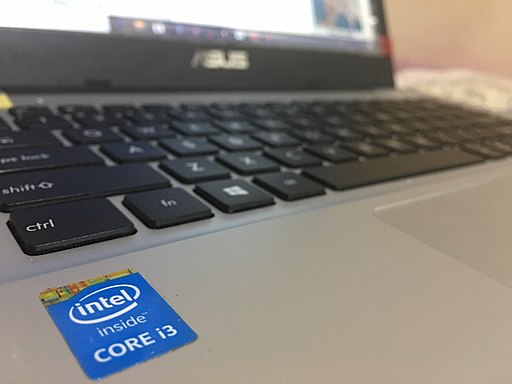

Default Blog
Jamodin Maliwanag - September 19, 2021
You may have noticed that most websites have a lock icon next to the address bar. This lock ensures that the information you input into the website will be safe. The name for the lock was known as Secure Sockets Layer (SSL) and is now known as Transport Layer Security (TLS), its successor.
lock icon and "https" shows secure browsing
SSL was developed by Netscape in 1994. It was a protocol used to help secure the transfer of information between your computer and the server that the website is held on. It works by encrypting your information and only the website holding your information can decrypt it. After the protocol was upgraded 3 times, it got replaced by a better protocol. In 1999, TLS was made and had better measures against exploitation and vulnerabilities on websites. The current version of TLS is 1.3, defined in 2018.
Encryption works by taking plain text or information and scrambling it so it's unreadable to a person or program trying to decipher it. Without encryption, your information will be stored as is. This means anyone who can access the website has your unscrambled information. Two types of encryption are: Symmetric and Asymmetric. Symmetric encryption has 1 key to encrypt and decrypt. Asymmetric encryption has a public key which: encrypts and verifies if the information has an authentic signature, and a private key which: decrypts and acts as an authentic signature.
Public key encrypts while private key decrypts
HTTP stands for hypertext transfer protocol and HTTPS is hypertext transfer protocol secure. When a website has “http://”, it will usually replace the lock icon with an X icon, signifying that your connection is not secure and your information is unscrambled. However, if a website has “https://”, it will accompany the lock icon, signifying that your information is secure and scrambled.
Shows how "https" scrambles your information
SSL is trustworthy, but not everything can be fully secure. Hackers will always be trying to decrypt your information. However, developers are also constantly upgrading and finding ways to make their encryption better. Websites with the lock icon are more secure than websites without a lock icon. To ensure a website is always secure, they have an SSL/TLS certificate that can be signed by a trusted Certificate Authority (CA). The website then goes through regular audits to determine if it can still be trusted. Information such as your address, credit card number or passwords are important and should be encrypted with the help of SSL/TLS and its encryption system.
Julia Shirwod Nueva (September 21, 2019) Core i3 Laptop
commons.wikimedia.orgSSL Support Team (2019, October 2) What is SSL? SSL
ssl.comVince Thomas (n.d.) SSL/TLS Overview Google
sites.google.comElizabeth Baier (2015, February 2) The Evolution of SSL and TLS
digicert.comOracle Corporation and/or its affiliates (2010) Configuring Java CAPS for SSL Support Oracle
docs.oracle.comAlison Grace Johansen (2020, July 24) What is encryption and how does it protect your data? Norton
us.norton.comInternet Society (n.d.) TLS Basics Internetsociety
internetsociety.orgCloud Flare (n.d.) HTTP vs. HTTPS: What are the differences? Cloudflare
cloudflare.comJiathong (2019, November 19) HTTP vs HTTPS: The Difference And Everything You Need To Know Seopressor
seopressor.comDavid Göthberg (2006, August 7) Public key encryption Wikipedia
en.wikipedia.org{kind=link}